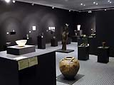
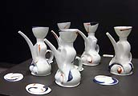
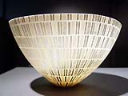
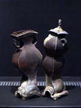
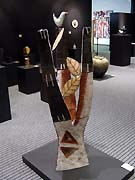

|
Sidney Myer International
Fund Ceramics Award
A major international award.
Since the demise of the Fletcher Challenge Ceramics Award several years ago,
the Sidney Myer International Fund has developed into the region's
most prestigious ceramics award, attracting entries from renown
ceramists around the world. Entries for the 2006 award close on
1 September 2005. Download
entry form (pdf format).
Sidney
Myer International Fund Ceramics Award
Organized by the Shepparton Art Gallery the "Sidney Myer Fund
International Ceramics Award, in association with La Trobe University"
is held every second year. This is the premier international ceramics
award held in Australia and offers a $15,000 Premier Award with
a further $10,000 in other prizes and acquisitions. Entry is by
slide accompanied by an official entry form. There is no entry fee
and entries close on 1 September 2005. Successful entrants will
be given a small shipping subsidy to assist with transport. The
judge is a ceramicist of international renown.
When the award was last held in 2004, it showcased 50 pieces of
ceramics from thirteen countries out of 245 original entries. Contemporary
international ceramics came from countries such as Portugal, Japan,
Australia, Canada, USA, Belgium, United Kingdom, China, Israel,
Germany, New Zealand, Switzerland and South Africa.
In 2004 the judge for the International Ceramics Award was Josie
Walter from England. Ms Walter, who was present at the opening,
is currently a Senior Lecturer in History and Theory of Design,
Illustration and Sustainable Design and Practice at the University
of Derby and a Visiting Lecturer at the Glas & Keramikskolen,
Pa Bornholm, Denmark. She is a regular demonstrator to potters'
groups and colleges. She has exhibited in over 50 exhibitions since
1979 around the United Kingdom, Europe and Canada. She has also
curated various exhibitions that have toured around the United Kingdom
and internationally. This includes, most recently, an exhibition
called "Pots in the Kitchen" at the Rufford Craft Centre
which featured 60 potters from Australia, Canada, America and Europe.
The winners announced on Friday 27 February 2004 were as follows:
The
Sidney Myer Fund Premier Award
Yanze Jiang, China, for Teapots on parade
When talking about this work, the judge, Josie Walter, said, "Slip
casting can be a severe technique but not only has Yanze created
soft flowing forms in porcelain she has also made each piece individual
by impressing as well as adding to the surface to create soft textures
enhanced by some lyrical brush decoration. The pieces work well
as a group, Yanze mentions an allusion to soldiers on parade, but
the teapots also work well as individual pieces."
|  |
La Trobe University Award of Merit
Ryota Aoki, Japan, for Luxury
Described by the judge, Josie Walter as, a 'most exquisite
and delicate piece".
|
|  |
Friends Of The Shepparton Art Gallery Society Award
of Merit
Graeme Wilkie, Australia, for Neo Classic Suburban Urns
Judge, Josie Walter, said "I was totally seduced by
the very luscious quality of the handles... I did think as
I passed them by you will hear various dry satirical comments
on notions of art, with a capital "A"."
|
Poyntzpass
Pioneers Award of Merit
Ann Ferguson Durkin, Australia, for Fire and Fruit
Judge, Josie Walter, said "The piece I have chosen today...
has a strong, personal and environmental significance to the artist
which echoes the fragility and strength of trees as well as their
spiritual connection with the Australian countryside."
Special Acquisitions:
Judge, Josie Walter, said "I am very pleased to be able to
tell you that several pieces from the exhibition were of such high
merit that they were bought by the Shepparton Art Gallery for their
permanent collection". * Ken Eastman, Full Circle United Kingdom
* Susie McMeekin, Wood-fire teadust bowl Australia * John Stroomer,
Classical Gas Australia * Sophie Thomas, Spiral Forms Australia.
Enquiries for the 2006 award can be made at Shepparton Art Gallery
on Ph +61-3-5832 9861, fax +61-3-5831 8480 or by email to art.gallery@shepparton.vic.gov.au.
Download entry form
(pdf format).
More Articles
|
{kind=link}
{kind=link}
{kind=link}
{kind=link}
{kind=link}